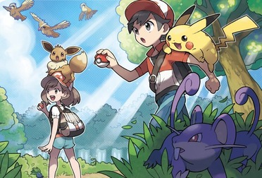
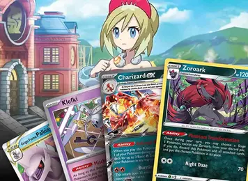
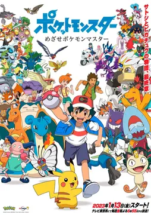

Name
The contracted term Pokémon derives from a syllabic abbreviation of the franchise's full name,
Pocket Monsters (ポケットモンスター, Poketto Monsutā). When the franchise began to be released
internationally, the short form of the title was used, with an acute accent for pronunciation.
Pokémon refers both to the franchise itself and the creatures within its fictional universe.
As a noun, it is identical in both the singular and plural, as is every individual species name;
it is grammatically correct to say "one Pokémon" and "many Pokémon", as well as "one Pikachu"
and "many Pikachu". In English, Pokémon may be pronounced either poe-keh-mon or poe-key-mon.
General Concept
The Pokémon franchise is set in a world in which humans coexist with creatures known as Pokémon.
Pokémon Red and Blue introduced 151 Pokémon species, with new Pokémon being introduced in
subsequent games; as of February 2023, 1,015 Pokémon species have been introduced. Many Pokémon
are designed to resemble real-world animals; for example, Pikachu is a yellow mouse-like
Pokémon with a lightning bolt-shaped tail, and possesses electrical abilities.
The player character takes the role of a Pokémon Trainer. The Trainer's three primary goals are
to explore the Pokémon world, complete their Pokédex―an electronic handheld encyclopedia―by
obtaining all available Pokémon, and to train a team of up to six Pokémon at a time and engage
them in battle. To obtain most Pokémon, the Trainer uses a spherical device known as a Poké
Ball. Once the opposing Pokémon is sufficiently weakened, the Trainer throws the Poké Ball
against it, and it is then transformed into a form of energy to be transported into the device.
Once the Pokémon is successfully caught, it is under the Trainer's command from then on. If the
Poké Ball is thrown again, the Pokémon re-materializes into its original state. The Trainer's
Pokémon can engage in battles against opposing Pokémon, including those in the wild or owned by
other Trainers. Because the franchise is aimed at children, these battles are never presented
as overtly violent and contain no blood or gore. Pokémon never die in battle, instead
fainting upon being defeated.
After a Pokémon wins a battle, it gains experience and becomes stronger. After gaining a
certain amount of experience points, its level increases, as well as one or more of its
statistics. As its level increases, the Pokémon can learn new offensive and defensive moves to
use in battle. Many species of Pokémon can evolve into a different species, with
increased stats compared to its pre-evolved form. Most species will evolve at a certain
level, while others evolve through different means, such as exposure to a certain item.
Media
Video Games

A series of video games developed by Game Freak and published by Nintendo and The Pokémon
Company under the Pokémon media franchise. It was created by Satoshi Tajiri with assistance
from Ken Sugimori, the first games, Pocket Monsters Red and Green, were released in 1996 in
Japan for the Game Boy, later released outside of Japan as Pokémon Red Version and Blue
Version. The main series of role-playing video games (RPGs), referred as the "core series"
by their developers, has continued on each generation of Nintendo's handhelds. The
most recently released core series games, Pokémon Scarlet and Violet, were released on
November 18, 2022, for the Nintendo Switch.
In addition to Game Freak's development, Creatures provides support through their Pokémon CG
Studio, which creates 3D models for the Pokémon in the games, and also develops some
spin-off titles. In 1998, Nintendo, Creatures, and Game Freak jointly established The
Pokémon Company, which manages licensing, production, publishing, marketing and deals for
the franchise both within Asia and worldwide through The Pokémon Company International.
Pokémon is one of the highest-grossing media franchises of all time, with successful anime
series, movies, and merchandise, with spin-off game Pokémon Go having crossed 1 billion
mobile game downloads worldwide. By November 24, 2017, more than 300 million Pokémon
games had been sold worldwide on handheld and home consoles, across 76 titles, including
spin-offs. As of March 2023, the series has sold over 480 million units worldwide.
This makes Pokémon the third best-selling video game franchise, behind Nintendo's own Mario
franchise, and Tetris.
| Title |
Year |
Platform |
Unit Sales |
| Red/Green/Blue/Yellow |
1996 |
GameBoy |
74,260,000 |
| Gold/Silver/Crystal |
1999 |
GameBoy Color |
42,840,000 |
| Ruby/Sapphire/Emerald |
2002 |
GameBoy Advanced |
37,850,000 |
| Diamond/Pearl/Platinum |
2006 |
DS |
40,330,000 |
| Black/White |
2010 |
DS |
24,160,000 |
| X/Y |
2013 |
3DS |
16,680,000 |
| Sun/Moon |
2016 |
3DS |
25,450,000 |
| VIII |
2019 |
Switch |
40,750,000 |
| Scarlet/Violet |
2022 |
Switch |
22,660,000 |
Trading Card Game

The Pokémon Trading Card Game, abbreviated as PTCG or Pokémon TCG, is a collectible card
game developed by Creatures Inc. based on the Pokémon franchise. As of March 2023, the game
has sold over 52.9 billion cards worldwide.
The Pokémon Trading Card Game is a strategy-based card game that is usually played on a
designated playmat or digitally on the official game client Pokémon TCG Live where two
players (assuming the role of Pokémon Trainer) use their Pokémon to battle one another.
Pokémon that have sustained enough damage from attacks that reaches or exceeds its HP is
referred to as being "Knocked Out," granting the opponent a prize card; however, powerful
card mechanics like Pokémon-V and Pokémon ex grant extra prize cards when Knocked Out.
Anime

Pokémon the Series, is a Japanese anime television series, part of The Pokémon Company's
Pokémon media franchise, which premiered on TV Tokyo in April 1997.
The anime franchise consists of eight sequential series in Japan, each based on a main
installment of the Pokémon video game series. In the international broadcasts, these series
are split across 26 seasons. The show originally followed Ash Ketchum, a young trainer of
fictional creatures called Pokémon. Joined by his partner Pokémon Pikachu and a rotating
cast of human characters, Ash goes on a journey to become a "Pokémon Master", traveling
through the various regions of the Pokémon world and competing in various Pokémon-battling
tournaments known as the Pokémon League. However, by the 26th season, a new cast is
featured, with brand new protagonists Liko and Roy.
The Pokémon anime series was largely credited for allowing anime to become more popular and
familiar around the world, especially in the United States and Asia, where many Pokémon
films are among the highest-grossing anime films. It is also considered to be one of the
first anime series on television to reach this level of mainstream success with Western and
Asian audiences, as well as being credited with allowing the game series to reach such a
degree of popularity and vice versa. Pokémon is regarded as the most successful video game
adaptation of all time, with over 1,200 episodes broadcast and adapted for international
television markets, concurrently airing in 192 countries worldwide and one of the most
widely watched shows on Netflix, as of 2016.
Seasons
- Indigo League
- Adventures in the Orange Islands
- The Johto Journeys
- Johto League Champions
- Master Quest
- Advanced
- Advanced Challenge
- Advanced Battle
- Battle Frontier
- Diamond and Pearl
- Diamond and Pearl: Battle Dimension
- Diamond and Pearl: Galactic Battles
- Diamond and Pearl: Sinnoh League Victors
- Black & White
- Black & White: Rival Destinies
- Black & White: Adventures in Unova and Beyond
- XY
- XY: Kalos Quest
- XYZ
- Sun & Moon
- Sun & Moon: Ultra Adventures
- Sun & Moon: Ultra Legends
- Journeys
- Master Journeys
- Ultimate Journeys
- Horizons